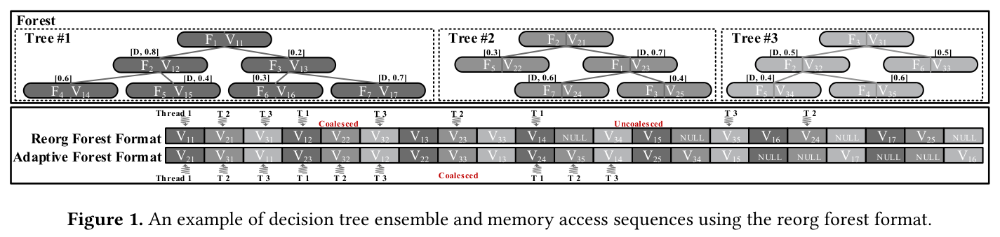

트리 세 그루와 두 가지 저장 형식

읽는 법
| 위쪽 상자 (Forest) | 트리 세 그루. 노드 안의 \(F_j\)는 비교할 속성 번호, \(V_{ti}\)는 트리 \(t\)의 \(i\)번 노드가 가진 비교 값 |
|---|---|
| 간선 위 숫자 | 그 간선을 탈 확률(간선 확률). D가 붙은 쪽은 속성 값이 없을 때 가는 기본 경로(default path) |
| 아래쪽 상자 | 같은 포레스트를 배열 한 줄로 저장한 모습. 윗줄은 Reorg Forest Format(FIL), 아랫줄은 Adaptive Forest Format(Tahoe) |
| 칸의 색 | 어느 트리의 노드인지 표시 (진한 회색 Tree#1, 중간 Tree#2, 연한 Tree#3). NULL은 그 자리에 노드가 없는 빈칸 |
| Thread 1, T2, T3 화살표 | 스레드 세 개가 같은 시점에 읽는 칸. 화살표가 붙어 있으면 Coalesced, 흩어져 있으면 Uncoalesced |
핵심 관찰
- reorg 형식은 모든 트리의 루트(\(V_{11}, V_{21}, V_{31}\))를 먼저 놓고, 이어서 2층 왼쪽 노드, 2층 오른쪽 노드, 3층 순서로 채운다. 여러 트리의 같은 자리 노드가 나란히 놓인다
[c04#b006][c04#b007]. - 윗줄의 앞쪽(루트와 2층)에는 Coalesced, 3층 쪽에는 Uncoalesced가 적혀 있다. 3층에서는 세 스레드가 왼쪽·오른쪽·오른쪽으로 갈라져 \(V_{14}, V_{24}, V_{35}\)를 읽고, 이 셋은 떨어져 있어 한 메모리 트랜잭션에 들어가지 않는다
[c06#b005]. - 아랫줄(adaptive)은 루트 순서가 \(V_{21}, V_{31}, V_{11}\)로 바뀌었고 그림에서 읽음, 3층에서도 세 화살표가 붙어 있다. Tree#2는 루트의 두 자식 간선 확률이 0.3과 0.7이라 좌우를 바꿨고, 그 결과 \(V_{25}\)와 Tree#1의 \(V_{14}\)가 이웃한다
[c06#b007].
저자의 주장 reorg 형식은 얕은 층에서만 메모리 접근이 병합된다. 자주 가는 쪽을 왼쪽에 모으고 비슷한 트리를 가까이 두면 깊은 층에서도 병합된다.
Q. 3층 접근이 왜 "한 트랜잭션에 안 들어간다"고 단정할 수 있나?
원문은 이 예에서 노드 하나의 크기를 메모리 트랜잭션의 3분의 1로 가정했다. 트랜잭션 하나에 노드 세 개까지만 담긴다는 뜻이다. \(V_{14}, V_{24}, V_{35}\)는 배열에서 세 칸 넘게 떨어져 있으므로 한 번에 가져오지 못한다 [c06#b005].
Q. NULL 칸은 왜 생기나?
reorg 형식은 모든 트리가 같은 모양이라고 보고 자리를 잡는다. Tree#2의 \(V_{22}\)와 Tree#3의 \(V_{33}\)은 자식이 없어서 그 자식 자리가 비어 있다 그림에서 읽음.
연결: 노트 3절 트리를 배열로 저장하기 · 노트 4절 메모리 병합 접근 · 해설 확률 기반 노드 재배치 · 번역 읽기의 이 그림 · 원문 3쪽